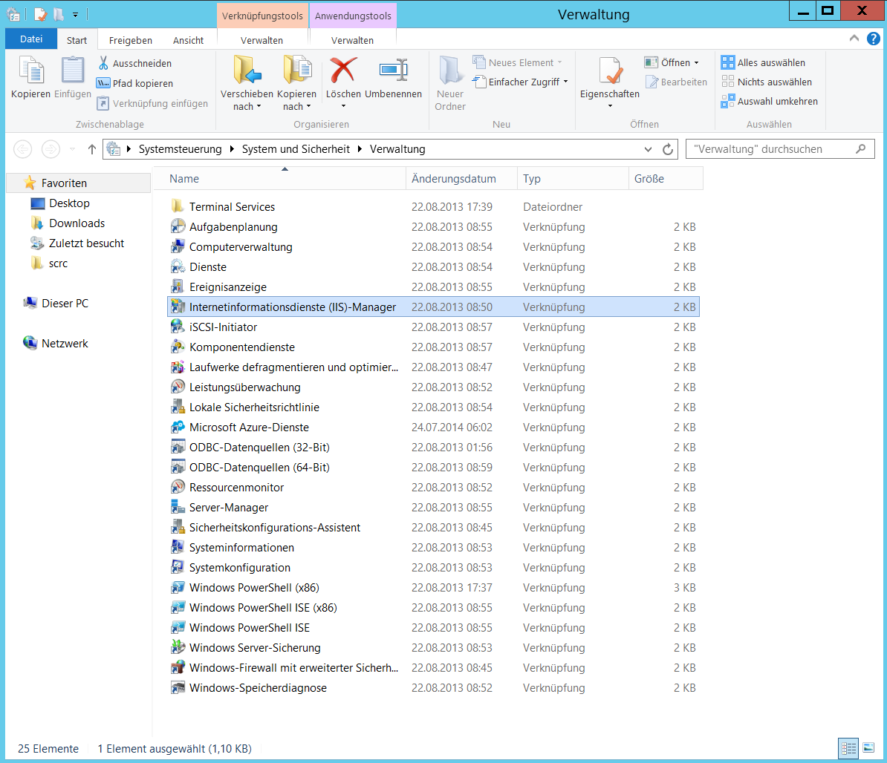
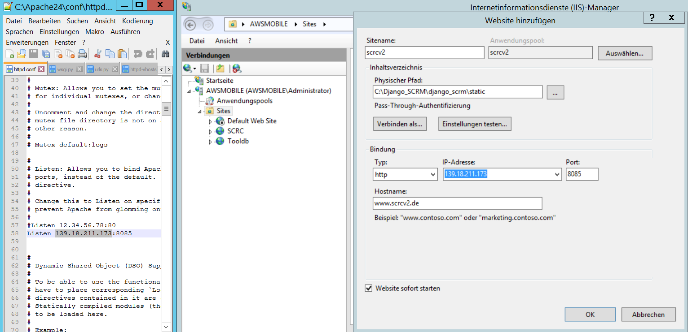
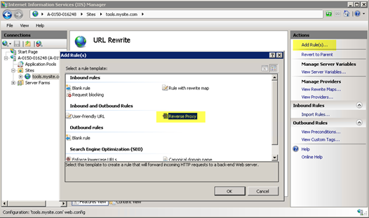
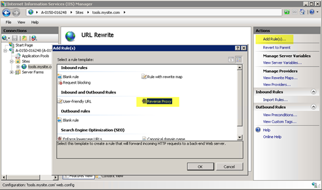
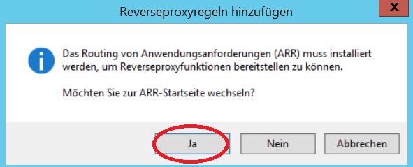
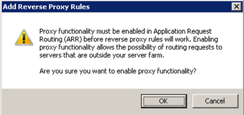

Git isntallieren:
1.1 Git Download
1.2 Git installieren:1.4 Git testen:
git --versionEs sollte jetzt die Gitversion angezeigt werden, falls nicht war die Installation nicht erfolgreich
Projekt clonen:
2.1 Falls noch nicht getan: Registrieren bei bitbucket.org
2.2 Falls noch nicht getan: Reposity-Einladungen durchführen
2.3 In den Ordner welchseln wo die Dateien hineinsollen und dort die Git Bash öffnen
2.4 Projekt auschecken:git clone https://USERNAME@bitbucket.org/folderpath/django_scrm.gitPython installieren:
Python downloaden und installieren: Download Python
Hinweis: Hier wird auch Pip mitinstalliertDjango (1.8.7), Django-Reversion und FeinCMS installieren:
4.1 manage.py mit einem Texteditor öffnen und die in Schritt 3 installierte Python-Version angeben4.2 Django installieren:
pip3 install Django==1.8.74.3 FeinCMS installieren:
pip3 install feincms4.4 Django-Reversion installieren:
pip3 install django-reversion4.5 Django-guardian installieren:
pip3 install django-guardianRegelt die Nutzerzugriffe
4.6 Django-bootstrap-Formular installieren:
pip3 install django-bootstrap-formProjekt initiieren:
5.1 CMD öffnen un in den Ordner wechseln wo die manage.py liegt (wurde durch das Clonen erstellt):
5.2 Lösche folgende Datei: db.sqlite3
5.3 Folgende Befehle ausführen (ggf. mit yes bestätigen):
python manage.py migratepython manage.py createsuperuser USERNAMEgewünschte Emailadresse (kann leer sein) und Passwort wählen
python manage.py collectstaticpython manage.py loaddata initialpages.jsonpython manage.py createinitialrevisionspython manage.py shell
exec(open("./setup_users.py").read())5.4 Server zum testen starten: Nochimmer in der CMD (wo die mangage.py liegt):
python manage.py runserverIm Browser ausführen: http://localhost:8000/admin/
Apachewebserver aufsetzen:
6.1 Falls noch nicht getan: C++ Redistributable Visual Studio 2015 Update 1 nachholen Download
6.2 Download Apache 2.4 VC14 Windows Binaries Download
6.3 Mod_wsgi runterladen: Download --> mod_wsgi-4.4.21+ap24vc14-cp35-none-win_amd64.whl
Diese Datei installieren:
pip3 install mod_wsgi-4.4.21+ap24vc14-cp35-none-win_amd64.whlDie Ergebnisdatei erscheint dann im Python-Verzeichnis:
C:\Users\Administrator\AppData\Local\Programs\Python\Python35\mod_wsgi.so6.4 Die Ergebnis-Datei von 6.3 in den Moduls Ordner des Apache-Servers verschieben
z.B.: "C:\httpd-2.4.18-win64-VC14\Apache24\modules\mod_wsgi.so"6.5 Füge in die Konfigurationsdatei "httpd.conf" (C:\httpd-2.4.18-win64-VC14\Apache24\conf\httpd.conf) folgende Zeile ein:
LoadModule wsgi_module sys.prefix\mod_wsgi.soWichtiger Hinweis: Prüfe auch folgende Zeile: ServerRoot "c:/Apache24" Sollte der Pfad nicht stimme muss entweder der Link oder die Ordner angeglichen werden Hier wird der Ordnerpfad wiefolgt angepasst:
Statt: C:\httpd-2.4.18-win64-VC14\Apache24\
Jetzt: C:\Apache24\conf\Port anpassen in der Konfigurationsdatei: an, z.B.:
Listen 8080Füge folgenden Code mit entsprechenden Pfaden in die Konfigurationsdatei am Ende an:
<Directory "C:/Django_SCRM/django_scrm>
Require all granted
Options Indexes FollowSymLinks Includes ExecCGI
Allow from all
</Directory>
<Directory "C:/Django_SCRM/django_scrm/static">
Require all granted
Options Indexes FollowSymLinks Includes ExecCGI
</Directory>
<Directory "C:/Django_SCRM/django_scrm/media">
Require all granted
Options Indexes FollowSymLinks Includes ExecCGI
</Directory>
<Directory "C:/Django_SCRM/django_scrm/static/oldsiteimg">
Require all granted
Options Indexes FollowSymLinks Includes ExecCGI
</Directory>
WSGIScriptAlias / "C:/Django_SCRM/django_scrm/django_scrm/wsgi.py"
WSGIPythonPath "C:/Django_SCRM/django_scrm"
<Directory "C:/Django_SCRM/django_scrm/">
<Files wsgi.py>
Require all granted
Options Indexes FollowSymLinks Includes ExecCGI
#Allow from all
</Files>
</Directory>In der settings.py sollte folgendes enthalten sein:
# Hosts for Test:
#ALLOWED_HOSTS = ['127.0.0.1', 'localhost']
# Host for Production:
ALLOWED_HOSTS = ['*']Die wsgi.py sollte wiefolgt aussehen:
import os
from django.core.wsgi import get_wsgi_application
os.environ.setdefault("DJANGO_SETTINGS_MODULE", "django_scrm.settings")
application = get_wsgi_application()6.6 Apache starten
C:\Apache24\bin>httpd.exeEinbindung von Apache in IIS
7.1 IIS öffnen  7.2 Eine Seite hinzufügen: 
7.3. Wenn die Option URL-Rewrite nicht angezeigt wird muss sie installiert werden Link: Ggf. IIS neustarten
7.4. URL-Rewrite-Icon anklicken  Auf Regel erstellen kicken. Dann auf reverse Proxy. 
Auf Regel erstellen kicken. Dann auf reverse Proxy. 
7.5. Sollte hier eine Meldung kommen, dass ARR noch nicht installiert bzw. aktiviert ist:  Dann auf 'ja' klicken und ARRv3 installieren. Ggf. auch wieder IIS neustarten.
7.6 Sollte eine Meldung kommen, dass die Proxyfunkionen noch nicht aktiviert sind, dann aktivieren: 
Alternativ: Server via Django runserver starten: Die Django-Entwickler raten davon ab, dies produktiv zu nutzen, aber es sei sei hier dennoch erwähnt, für den Fall das es garnicht anders geht
python3 manage.py runserver --ipv6 [::\0]:8000